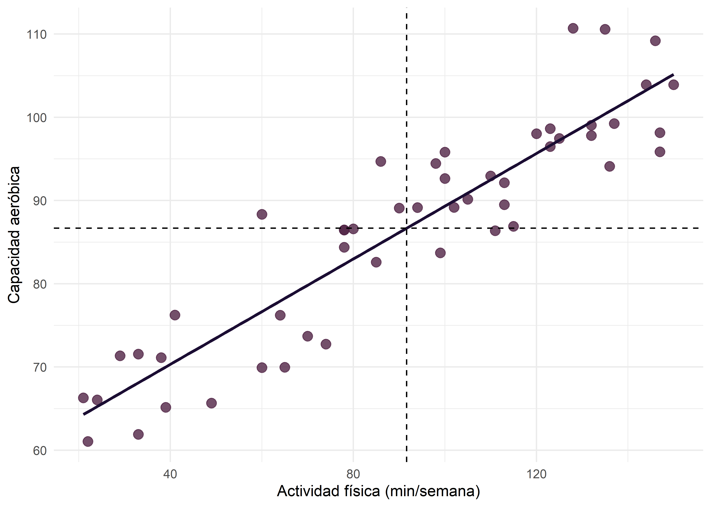
Covarianza y correlación
Tamara Ricardo ![]()
Introducción
Una parte fundamental del análisis epidemiológico es detectar relación entre dos variables numéricas. Este análisis permite identificar patrones, tendencias y posibles asociaciones. Por ejemplo:
Presión sanguínea y edad
Estatura y peso
Concentración de un medicamento y frecuencia cardíaca
Establecer estas relaciones facilita la identificación de factores de riesgo y/o la planificación de intervenciones. Para ello, se emplean dos herramientas estadísticas clave: la covarianza y la correlación.
Covarianza: Mide si dos variables aumentan o disminuyen simultáneamente.
Correlación: Evalúa la dirección e intensidad de la relación, lo que permite interpretar y comparar con mayor claridad.
Covarianza
La covarianza es una medida estadística que indica el grado de variabilidad conjunta de dos variables cuantitativas \(X\) e \(Y\). Matemáticamente se define como:
\[ S_{XY} = \frac{1}{n} \sum_{i=1}^{n} (x_i - \bar{x})(y_i - \bar{y}) \]
donde:
\(x_i\) e \(y_i\) son los valores individuales de cada variable.
\(\bar{x_i}\) e \(\bar{y_i}\) son las medias de las variables \(x\) e \(y\).
\(n\) es el número de pares de datos.
Representación gráfica
La covarianza suele representarse gráficamente usando diagramas de dispersión (scatterplots), que muestran la dirección de la asociación y permiten detectar valores extremos (outliers). Cuando examinamos un diagrama de dispersión, debemos observar si existe un patrón general en los puntos graficados y señalar su dirección. Es decir, mientras una variable se incrementa, ¿la otra parece aumentar o disminuir? Además, debemos observar si hay datos distantes, que son puntos que se ubican muy lejos de todos los demás.
Consideremos la nube de puntos formadas por las \(n\) parejas de datos (\(x_i\), \(y_i\)). El centro de gravedad de esta nube de puntos es (\(\bar{x}\) , \(\bar{y}\)). Trasladamos los ejes XY al nuevo centro de coordenadas. Los puntos que se encuentran en el primer y tercer cuadrante contribuyen positivamente al valor de \(S_{XY}\), y los que se encuentran en el segundo y el cuarto lo hacen negativamente.
Covarianza positiva
El siguiente gráfico muestra una relación positiva entre minutos de actividad física semanal (\(X\)) y capacidad aeróbica (\(Y\)). Podemos observar que, cuando crece \(X\) también crece \(Y\) y casi todos los puntos pertenecen a los cuadrantes primero y tercero (\(S_{XY}>0\)).
Covarianza negativa
En este gráfico, a medida que aumenta el consumo de alcohol semanal (\(X\) ), disminuyen los niveles de enzimas hepáticas (\(Y\)). Casi todos los puntos pertenecen a los cuadrantes segundo y cuarto (\(S_{XY}<0\)).
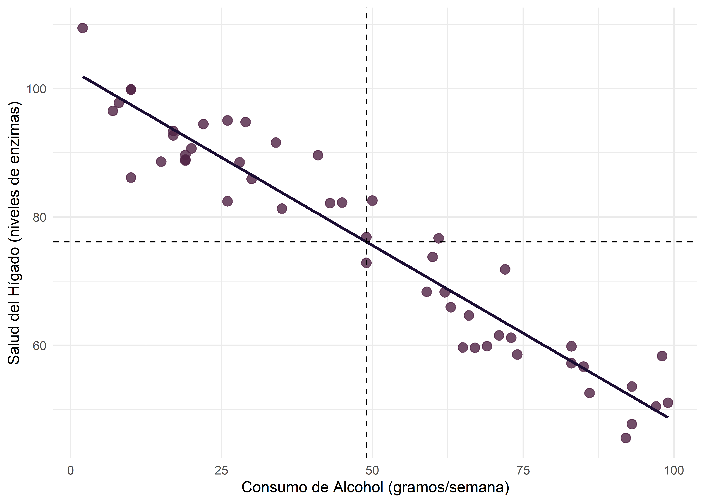
Covarianza cercana a cero
En el diagrama de dispersión se puede observar que los cambios en las horas de sueño (\(X\)) no tienen relación con el nivel de colesterol en sangre (\(Y\)). No se observa un patrón, sino que los puntos se reparten de modo más o menos homogéneo entre los cuadrantes (\(S_{XY}\simeq 0\)).
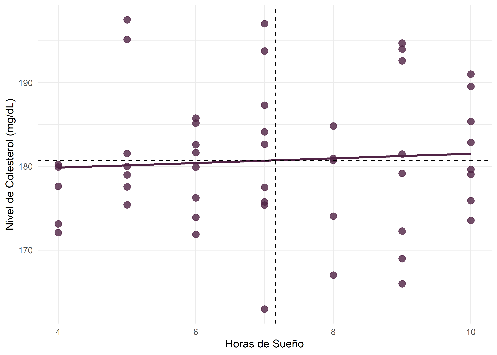
Limitaciones de la covarianza
La covarianza está afectada por las unidades en las que se miden las variables, lo que puede dificultar la interpretación de su magnitud. Para resolver este problema, es necesario utilizar una medida que no esté afectada por las unidades de medida de las variables: la correlación.
Correlación
La correlación trata de establecer la relación o dependencia que existe entre las dos variables que intervienen en una distribución bidimensional. Es decir, determinar si los cambios en una de las variables influyen en los cambios de la otra. En caso de que suceda, diremos que las variables están correlacionadas o que hay correlación entre ellas.
La correlación, como cuantificación del grado de relación que hay entre dos variables, es un valor entre -1 y +1, pasando, por el cero. Hay, por lo tanto, correlaciones positivas y negativas. El signo es, pues, el primer elemento básico a tener en cuenta.
Correlación positiva: existe relación directa; ambas variables aumentan o disminuyen simultáneamente. El coeficiente de correlación tiene valores entre 0 y 1.
Correlación negativa: existe relación inversa; una variable aumenta mientras la otra disminuye. El coeficiente de correlación tiene valores entre -1 y 0.
Correlación cercana a cero: no hay relación lineal, aunque podría existir una relación no lineal.
Lo segundo a tener en cuenta en la correlación es la magnitud. Y esto lo marca el valor absoluto de la correlación. En la magnitud se valora la correlación sin el signo, valorando la magnitud del número puro. Esto significa que cuanto más cerca estemos de los extremos del intervalo de valores posibles: -1 y +1, más correlación tenemos.
La correlación más usada para variables cuantitativas es la correlación de Pearson. Es especialmente apropiada cuando la distribución de las variables es la normal. Si no se cumple la normalidad o si las variables son ordinales es más apropiado usar la correlación de Spearman o la correlación de Kendall.
Correlación de Pearson
Mide la relación lineal entre dos variables, eliminando la influencia de las unidades de medida. Es una medida adimensional, obtenida al estandarizar la covarianza entre dos variables \(X\) e \(Y\):
\[r = \frac{Cov_{XY}}{S_xS_y} \]
donde:
\(Cov_{XY}\) es la covarianza entre las variables \(X\) e \(Y\).
\(S_x\) y \(S_y\) son las desviaciones estándar de las variables \(X\) e \(Y\).
El coeficiente de correlación \(r\) entonces se interpreta como:
\(0 < r \leq 1\): correlación positiva; ambas variables aumentan o disminuyen simultáneamente.
\(-1 \leq r > 0\): correlación negativa; una variable aumenta mientras la otra disminuye.
\(r ≈ 0\): no hay relación lineal, aunque podría existir una relación no lineal.
¿A partir de qué valores de \(r\) se considera que hay “buena correlación”? La respuesta no es simple. Hay que tener en cuenta la presencia de observaciones anómalas y si la varianza se mantiene homogénea. En reglas generales se acepta que:
\(r ≈ ±1\): correlación perfecta.
\(r \geq ±0.7\): correlación fuerte.
\(±0.4 \leq r < ±0.7\): correlación moderada.
\(r \leq ±0.4\): correlación débil.
Correlación positiva perfecta entre \(X\) e \(Y\)
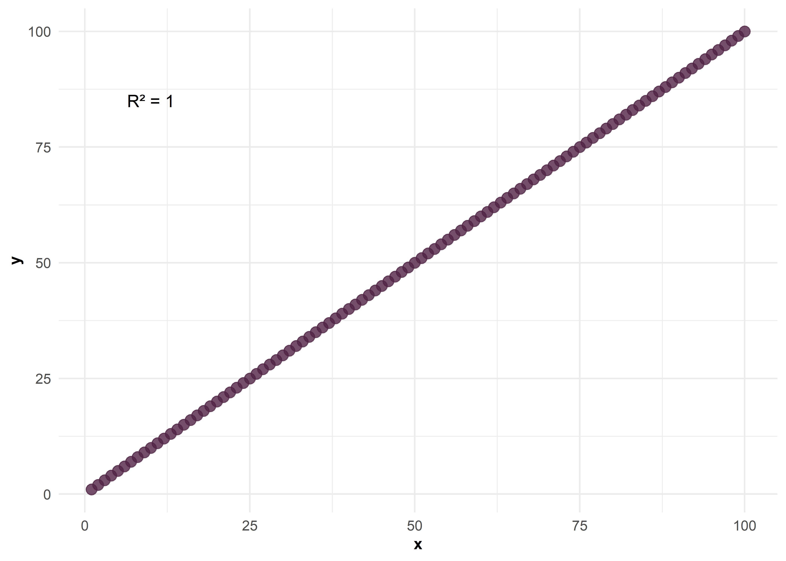
Correlación positiva fuerte entre \(X\) e \(Y\)
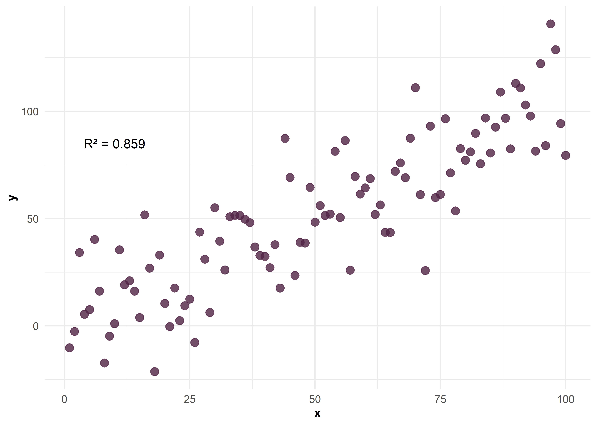
Correlación positiva moderada entre \(X\) e \(Y\)
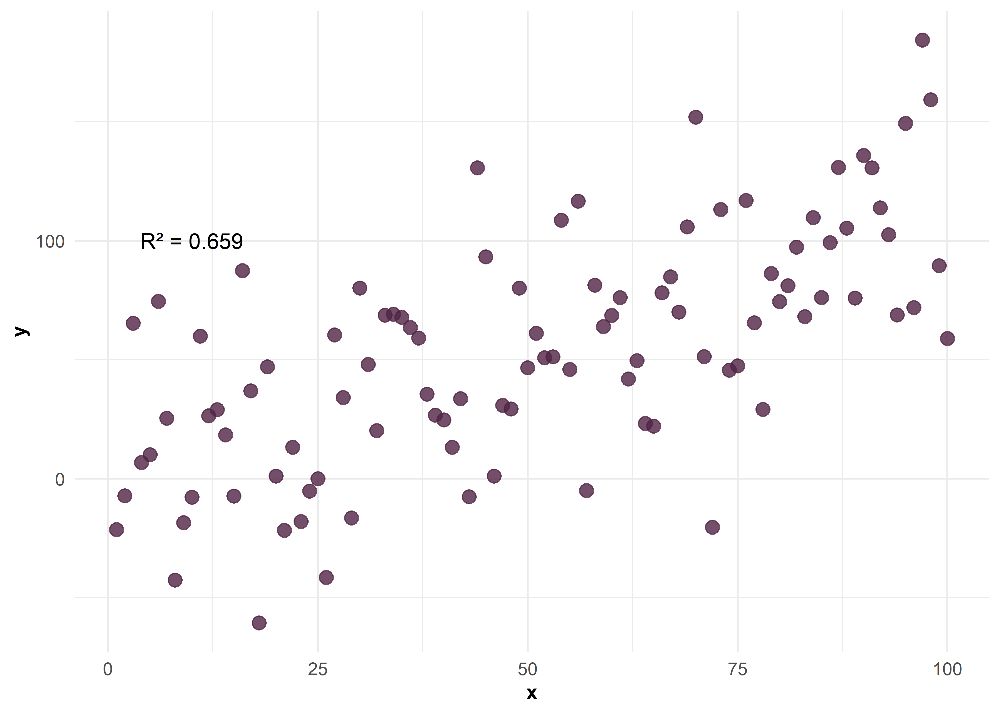
Correlación negativa perfecta entre \(X\) e \(Y\)
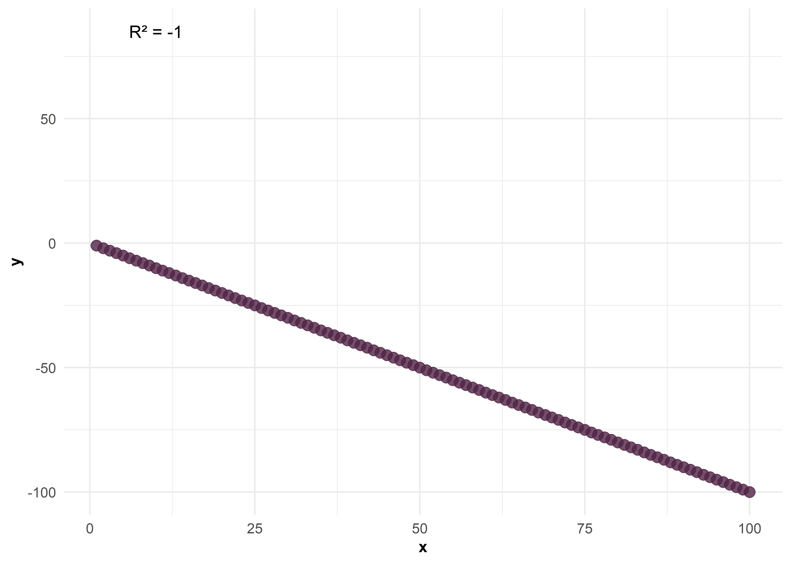
Correlación negativa fuerte entre \(X\) e \(Y\)
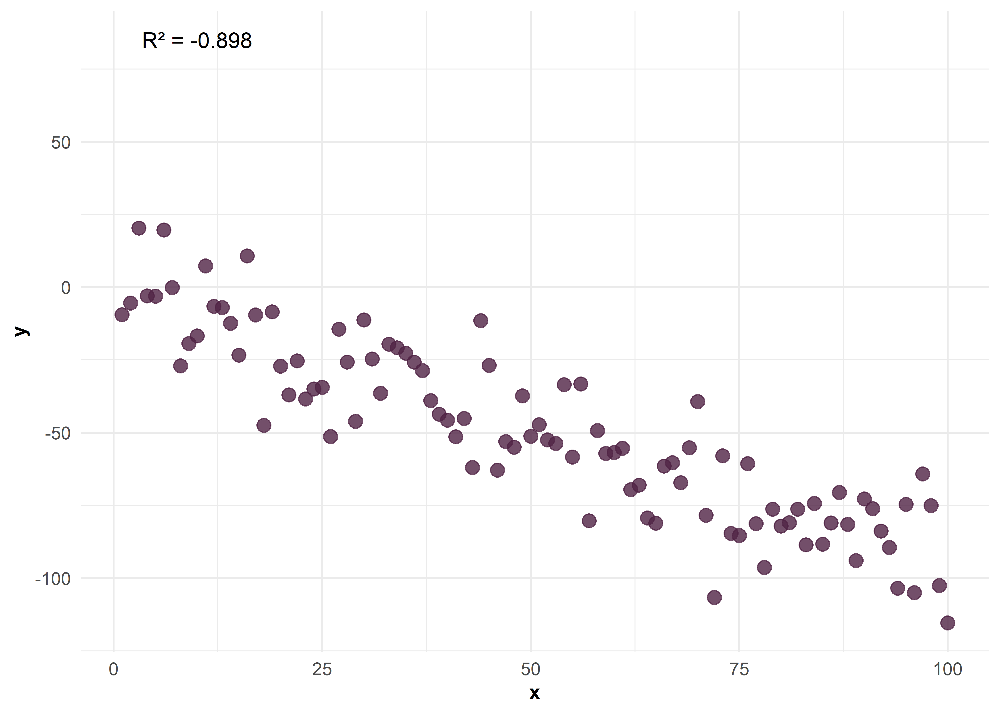
Correlación negativa moderada entre \(X\) e \(Y\)
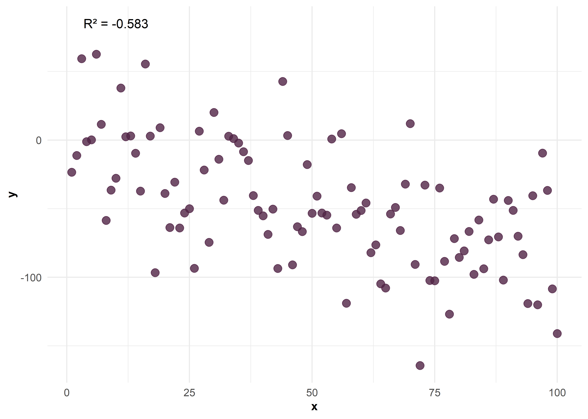
\(X\) e \(Y\) no correlacionadas
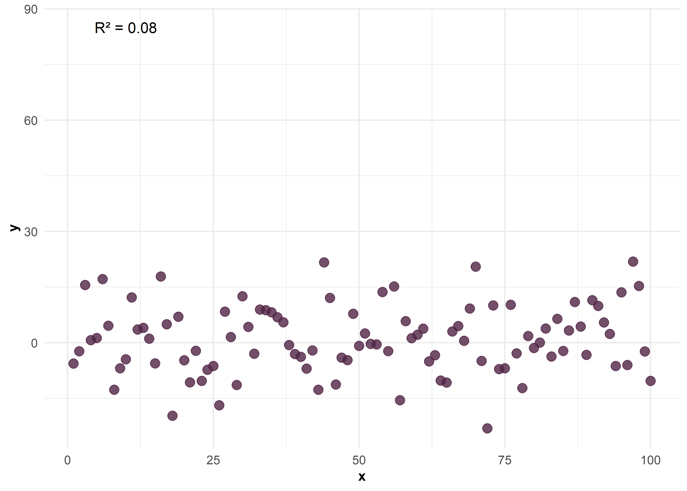
Relación no lineal entre \(X\) e \(Y\)
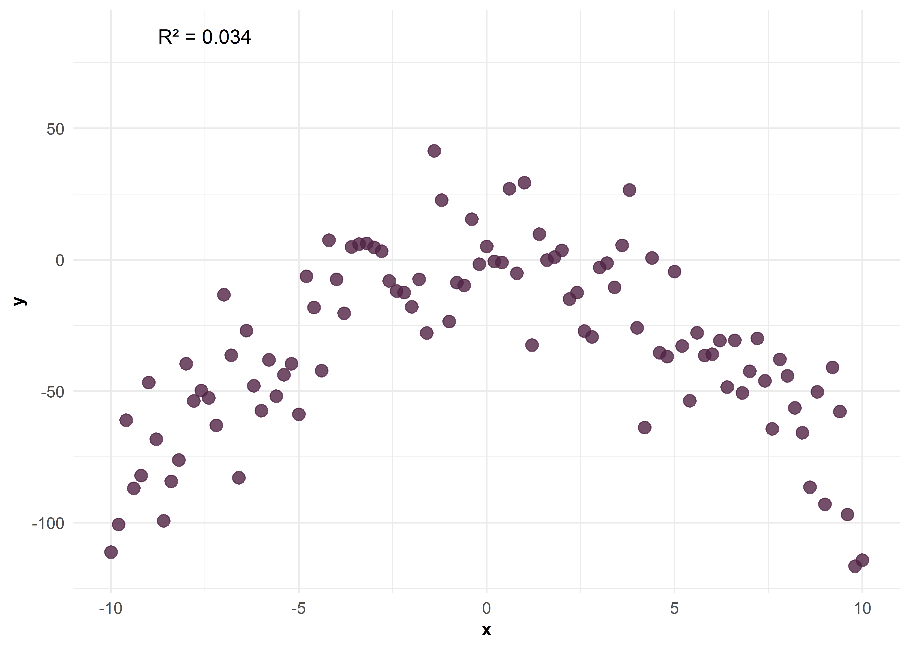
Correlogramas
Los correlogramas son gráficos que muestra la relación entre cada par de variables numéricas en un conjunto de datos. Se utiliza para analizar la correlación entre variables, identificar patrones y controlar la aleatoriedad de los datos. Existen diversos paquetes en R que permiten generar correlogramas, como correlation, que forma parte del ecosistema de paquetes easystats(Lüdecke et al. 2022), o GGally(Schloerke et al. 2024) que usa como base el paquete ggplot2.
Correlación de Spearman
Mide la correlación entre dos variables basada en los rangos (orden) de los valores. Se utiliza cuando los datos no presentan una relación lineal o tienen una relación monótona. Matemáticamente se expresa como:
\[ \rho = \frac{1 - 6\sum d_i^2}{n(n^2-1)} \]
donde:
\(d_i\) es la diferencia en los rangos de cada par de observaciones.
\(n\) es el número de observaciones.
Correlación de Kendall
Mide la relación ordinal entre dos variables numéricas en base a la concordancia y discordancia entre pares. Se utiliza cuando hay datos con valores repetidos o la muestra es pequeña. Es más robusta frente a datos con valores atípicos en comparación con Spearman. Matemáticamente se expresa como:
\[ \tau = \frac{n_c - n_d}{n(n-1)/2} \]
donde:
- \(n_c\) y \(n_d\) son los pares concordantes o discordantes.
Ejemplo práctico en R
Tomemos como ejemplo la base cancer_USA.txt que contiene información sobre la tasa de mortalidad por cáncer cada 100.000 habitantes de distintos condados de la Costa Este de Estados Unidos.
Comenzaremos por cargar los paquetes necesarios para el análisis:
Cargamos los datos y exploramos su estructura:
Rows: 213
Columns: 10
$ condado <chr> "Belknap County", "Carroll County", "Cheshire Count…
$ estado <chr> "New Hampshire", "New Hampshire", "New Hampshire", …
$ tasa_mortalidad <dbl> 182.6, 168.8, 162.8, 181.6, 155.0, 163.2, 173.1, 17…
$ mediana_edad <dbl> 46.1, 50.3, 42.0, 48.1, 41.9, 40.1, 42.6, 43.5, 37.…
$ mediana_edad_cat <chr> "45+ años", "45+ años", "36-39 años", "45+ años", "…
$ mediana_ingresos <dbl> 59831, 57556, 56008, 42491, 56353, 71233, 62429, 79…
$ pct_pobreza <dbl> 10.0, 10.7, 11.8, 14.9, 11.6, 8.7, 9.5, 6.1, 11.8, …
$ pct_salud_publica <dbl> 16.8, 13.4, 12.7, 22.5, 14.0, 12.7, 13.1, 9.0, 12.4…
$ pct_sec_incompleta <dbl> 15.4, 14.8, 6.1, 13.2, 6.6, 12.9, 10.9, 13.5, 6.1, …
$ pct_desempleo <dbl> 5.3, 5.8, 6.1, 6.9, 5.0, 5.9, 5.2, 5.6, 6.5, 5.8, 1…La base de datos tiene 213 observaciones y 10 variables. La variable dependiente es tasa_mortalidad y hay 3 variables independientes categóricas y 6 variables independientes numéricas o continuas:
tasa_mortalidad: Tasa de mortalidad por cáncer a nivel de condado (datos agregados).
pct_salud_publica: Porcentaje de personas con cobertura exclusiva de salud pública en el condado.
pct_pobreza: Porcentaje de personas por debajo de la línea de pobreza en el condado.
pct_sec_incompleta: Porcentaje de personas con estudios secundarios incompletos en el condado.
mediana_edad: Mediana de la edad de fallecimiento por cáncer en el condado.
mediana_edad_cat: Versión categorizada de la mediana de edad al fallecer por cáncer en el condado.
condado: Condado de residencia.
estado: Estado de residencia.
La función cor() estima la correlación entre dos variables. El método predeterminado devuelve la correlación de Pearson y puede modificarse el argumento method para obtener la correlación de Kendall o Spearman:
cor(datos$tasa_mortalidad, datos$pct_pobreza,
method = "pearson")[1] 0.3301532La función cor.test() determina si la prueba de correlación de Pearson calculada es significativa mediante el estadístico \(t\) de Student:
cor.test(datos$tasa_mortalidad, datos$pct_pobreza)
Pearson's product-moment correlation
data: datos$tasa_mortalidad and datos$pct_pobreza
t = 5.0806, df = 211, p-value = 8.266e-07
alternative hypothesis: true correlation is not equal to 0
95 percent confidence interval:
0.2048117 0.4448414
sample estimates:
cor
0.3301532 Los resultados de la función son:
- El valor del estadístico \(t\)
- El valor de \(p\) para el estadístico
- El valor de la correlación de Pearson
- Los intervalos de confianza para la correlación
Los argumentos predeterminados para la función cor.test() son:
alternative = "two.sided"- indica la hipotesis alternativa, también puede ser"greater"para asociación positiva,"less"para asociación negativa.conf.level = 0.95- determina el nivel de confianza (se puede modificar).method = "pearson"- especifíca el tipo de test de correlación. También permite"kendall"o"spearman".
Gráficos de correlación
Podemos generar diagramas de dispersión para cada par de variables numéricas usando la función ggpairs() del paquete GGally (Schloerke et al. 2024):
datos |>
# selecciono soloamente las variables numéricas
select(where(is.numeric)) |>
# diagramas de dispersión
ggpairs()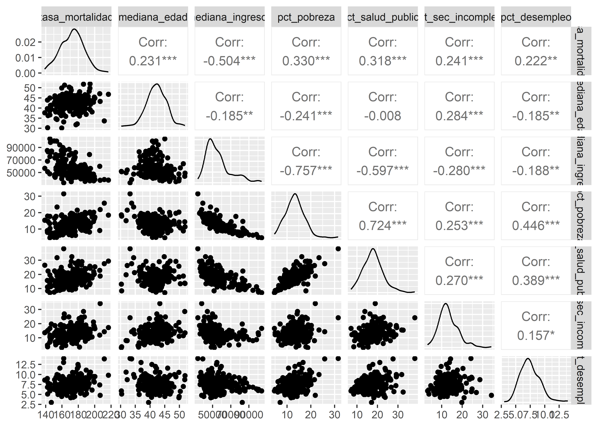
Podemos generar los correlogramas con el paquete correlation usando el siguiente código:
El comando ggcorr() del paquete GGally también nos permite generar correlogramas:
datos |>
# selecciono soloamente las variables numéricas
select(where(is.numeric)) |>
# correlograma
ggcorr(label = T)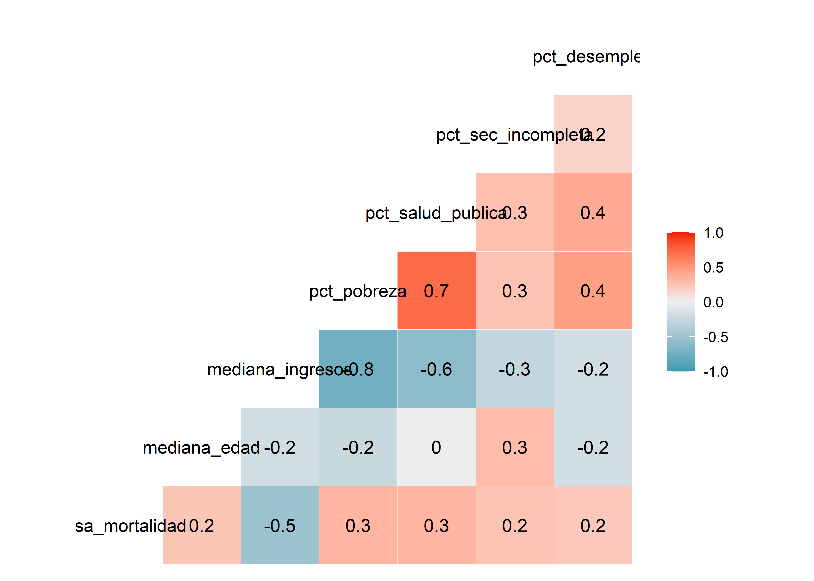
Podemos hacerlos más atractivos visualmente modificando los argumentos nbreaks, geom, size, max_size y palette:
datos |>
# selecciono soloamente las variables numéricas
select(where(is.numeric)) |>
# correlograma
ggcorr(label = T, # coeficientes
size = 3, # tamaño de texto
geom = "circle", # forma del gráfico
max_size = 15, # tamaño máximo de las formas
nbreaks = 6, # número de categorías de color
palette = "PRGn") # color de las formas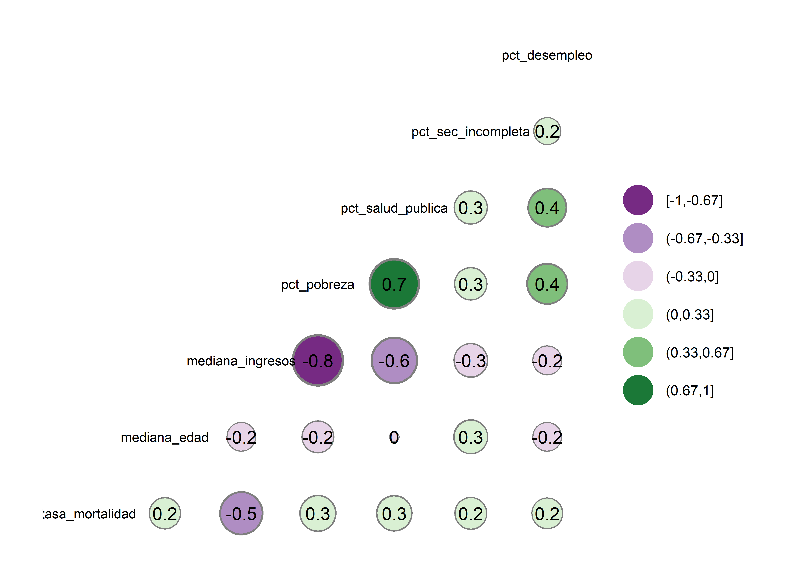
Observamos que la variable dependiente (tasa_mortalidad) tiene correlación negativa moderada con mediana_ingresos, también que existe una correlación negativa fuerte entre pct_pobreza y mediana_ingresos y moderada con pct_salud_publica. Las correlaciones entre las demás variables son débiles o nulas.
Para visualizar el correlograma con el coeficiente de Spearman, añadimos el argumento method = c("pairwise", "spearman") al código del ejemplo anterior:
datos |>
# selecciono soloamente las variables numéricas
select(where(is.numeric)) |>
# correlograma
ggcorr(label = T, # coeficientes
size = 3, # tamaño de texto
geom = "circle", # forma del gráfico
max_size = 15, # tamaño máximo de las formas
nbreaks = 6, # número de categorías de color
palette = "PRGn", # color de las formas
method = c("pairwise", "spearman")) # coeficiente de Spearman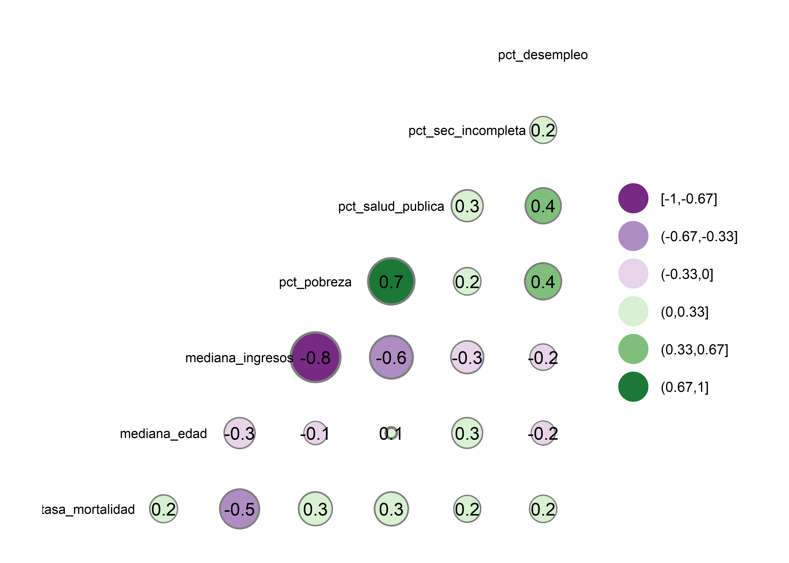
De igual modo, si queremos aplicar el coeficiente de Spearman, añadimos el argumento method = c("pairwise", "kendall"):
datos |>
# selecciono soloamente las variables numéricas
select(where(is.numeric)) |>
# correlograma
ggcorr(label = T, # coeficientes
size = 3, # tamaño de texto
geom = "circle", # forma del gráfico
max_size = 15, # tamaño máximo de las formas
nbreaks = 6, # número de categorías de color
palette = "PRGn", # color de las formas
method = c("pairwise", "kendall")) # coeficiente de Kendall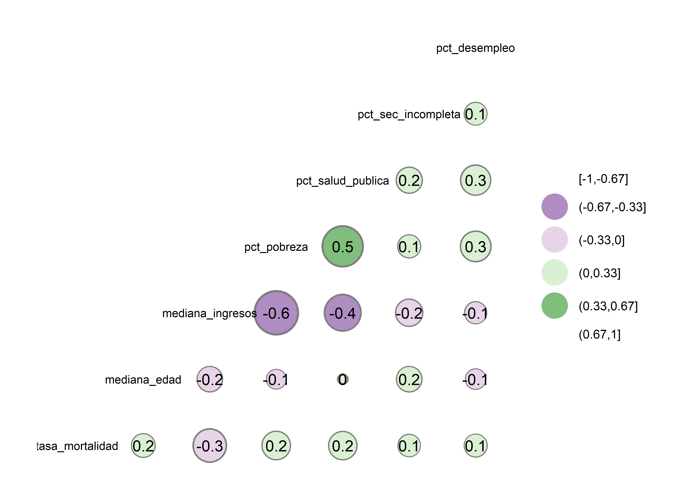
Para explicar la forma de esta correlación e incluso predecir los valores que puede alcanzar una variable dependiente numérica en función de una variable independiente también numérica podemos utilizar la regresión lineal simple.
Referencias
Agresti, Alan. 2015. Foundations of Linear and Generalized Linear Models. Wiley Series En Probability y Statistics. Hoboken, New Jersey: John Wiley & Sons, Inc.
Lüdecke, Daniel, Mattan S. Ben-Shachar, Indrajeet Patil, Brenton M. Wiernik, Etienne Bacher, Rémi Thériault, y Dominique Makowski. 2022. «easystats: Framework for Easy Statistical Modeling, Visualization, and Reporting». https://doi.org/10.32614/CRAN.package.easystats.
R Core Team. 2025. «R: A Language and Environment for Statistical Computing». https://www.R-project.org/.
Schloerke, Barret, Di Cook, Joseph Larmarange, Francois Briatte, Moritz Marbach, Edwin Thoen, Amos Elberg, y Jason Crowley. 2024. «GGally: Extension to ’ggplot2’». https://CRAN.R-project.org/package=GGally.
Triola, Mario F. 2018. ESTADÍSTICA Decimosegunda Edicion. Pearson Educación de México, SA de CV.
Wickham, Hadley, Mara Averick, Jennifer Bryan, Winston Chang, Lucy D’Agostino McGowan, Romain François, Garrett Grolemund, et al. 2019. «Welcome to the tidyverse» 4: 1686. https://doi.org/10.21105/joss.01686.